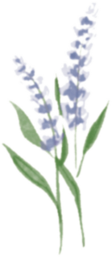

URBAN GREEN
SPACE
Home
Back

Name
Lavender, known scientifically as “Lavandula”, belongs to Lamiaceae.
Features
Appearance: Lavender has silvery-green leaves and small, fragrant purple or violet flowers. Scent: Its floral, fresh, and calming scent is popular in aromatherapy, perfumes, and skincare. Uses: Lavender soothes stress, aids sleep, and is used in cooking, teas, and for its antimicrobial properties. Season: Blooms late spring to early summer
Where I found it
I discovered lavender while exploring Governor's Island, New York. It is grown in gardens and green spaces on the island.